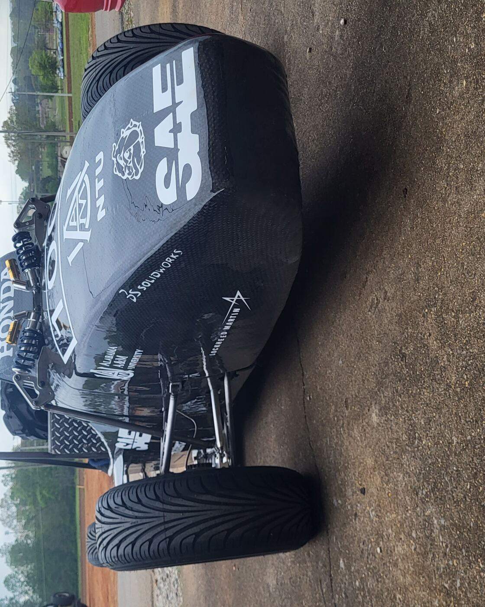
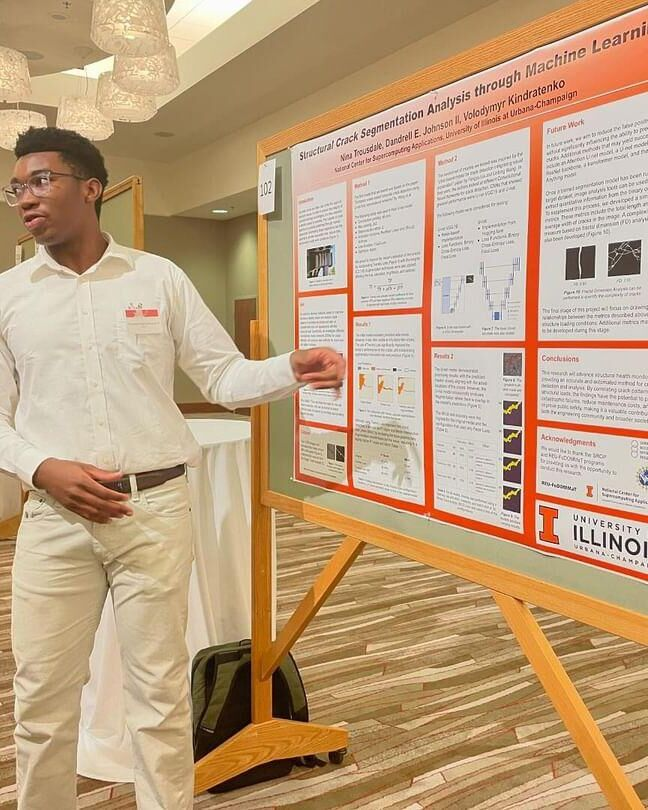
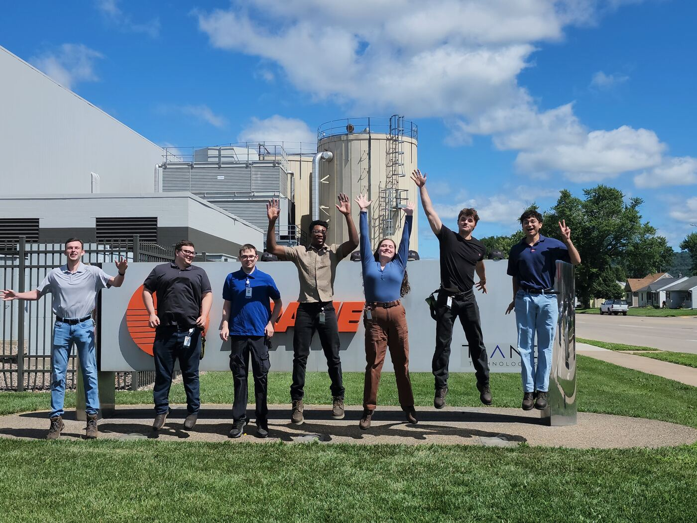
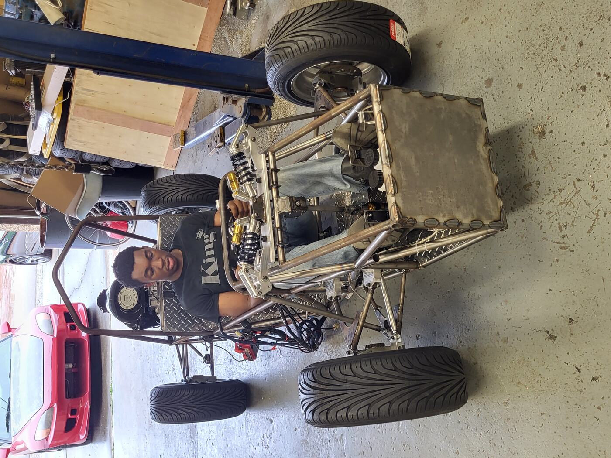
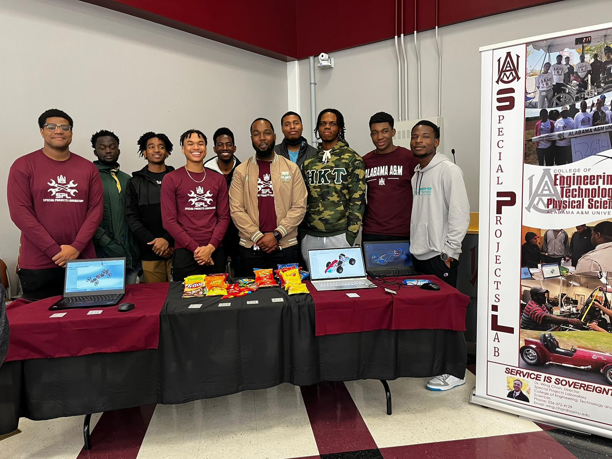
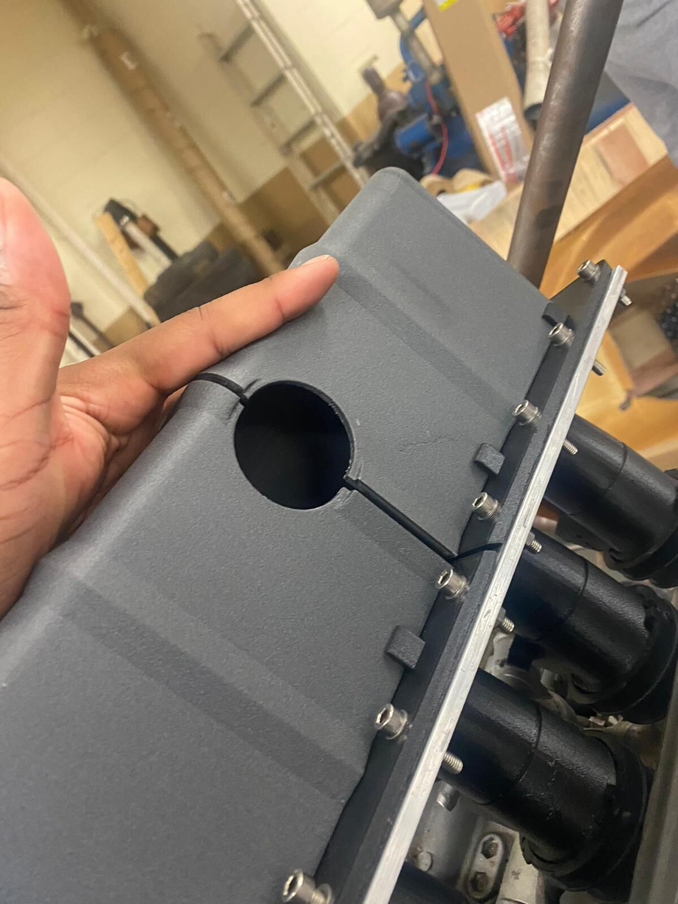

Dandrell E. Johnson II.
Mechanical engineering, with the work done in the shop and not only on the screen. Built hardware and shipped process — a race car, a rover, a research pipeline, an HVAC assembly cell, a refuse-body line, and an arm still on the bench.
Alabama A&M University, May 2027
Heil Environmental — ESG, a Terex company
Fort Payne, Alabama
Built
the car.
Project supervisor for the Alabama A&M Formula SAE car, running design through manufacturing and holding the team to a weekly schedule.
The car had no way to actuate the transmission. I built an electronic paddle shifter for it — a switch input read by an Arduino in C++, driving a servo against the shift linkage. I also fabricated the full wiring harness, where every electrical system in the car had to talk to every other one with no margin for a bad crimp, and designed the intake air manifold.
- Role
- Project supervisor
- Shift actuation
- Arduino · C++ · servo linkage
- Harness
- Full vehicle, in-house fabrication
- Intake
- Air manifold, design and build
- Season
- FSAE 2023—24

Test and
evaluation.
Test and evaluation engineer on the rover team. A human-powered vehicle, hand-built, run over simulated planetary terrain against a clock.
My work was the chassis and its components — analysing what the structure would actually see under load, then presenting the findings and representing the team through review.
- Role
- Test & evaluation engineer
- Subject
- Rover chassis and components
- Drive
- Human-powered, two-crew
- Venue
- Marshall Space Flight Center

Finding
the cracks.
Summer research at NCSA, University of Illinois Urbana-Champaign, through the MSI Alliance programme, under Dr. Volodymyr Kindratenko.
The problem: detecting and measuring cracking in concrete under load, at a scale nobody wants to do by eye. I ran segmentation models in PyTorch across a large annotated dataset, comparing architectures to find which one correlated crack geometry to applied load most reliably.
- Framework
- PyTorch
- Task
- Semantic segmentation
- Subject
- Crack propagation in concrete
- Advisor
- Dr. V. Kindratenko
- Term
- Summer 2024

A new
cell.
Project engineering intern in La Crosse, Wisconsin, on commercial HVAC production.
Led the installation of a new assembly cell as part of a new production line — $1.3 million in added revenue and thirty percent more plant capacity. Wrote the standard work for it from scratch, calculating cycle times and running the time studies the operators would actually be measured against. Then matched facility capacity to real customer demand and cut more than twenty thousand dollars of material out of holding cost.
- Revenue
- +$1.3M, new production line
- Capacity
- +30% plant throughput
- Materials
- $20,000+ holding cost removed
- Discipline
- Standard work · time study

On the
floor.
Manufacturing engineering intern in Fort Payne, working lean and time study on a live refuse-body line. Twenty-plus workflow analyses standardized, cycle times down ten percent, bottlenecks named.
Three tools came out of it. A live time-study tool that cut engineering effort by roughly half and got adopted on the floor — operators mark their own stations, so the data comes from the line instead of a stopwatch behind them. A work-instruction builder in VBA that turns a parts list into a formatted ledger sheet with PPE icons and automatic pagination. And training video and digital documentation folded into Smartsheet and L2L, which took operator error down twenty-five percent.
- Cycle time
- −10% across 20+ workflows
- Engineering effort
- −52%, live time-study tool
- Operator error
- −25% (Smartsheet / L2L)
- Discipline
- Lean · time study
Five degrees
of freedom.
A robotic arm with a quick-change tool head, fabricated entirely in house. The second joint carries the load, so it got a single-stage cycloidal reduction — seventeen lobes running against eighteen pins, printed in PETG.
- Ratio
- 17:1, single stage
- Lobes
- 17
- Pins
- 18
- Disc stack
- 90—100 mm
- Material
- PETG, printed
- Model
- Parametric, OpenSCAD
- Status
- Print validation
- Size
- ~2,100 lines · 11 files
- Control
- Timer1 ISR motion
- Safety
- Latching fault manager
- Link
- Checksummed serial
- Validation
- 1,000-cycle plan
assets/seq/frame_0001.jpg … frame_0090.jpg
and this becomes a scroll-driven exploded view.
The log.
STEM intern and robotics coach. A team of ten students through FIRST LEGO League — research, communication, and the habit of solving something you weren't handed the answer to.
School of Engineering certificate, Automation & Robotics.
Autodesk Certified User — Revit and Inventor. PLTW Computer Science and Engineering Academy. Automation and Robotics. Trojan Safe Computers.
National Society of Black Engineers. SAE. National Society of Leadership and Success. AAMU Engineering Dean's List, 2023.
Tuba. Four seasons of showing up at six in the morning for something that isn't graded.
Evidence.






Let's build
something.
Graduating May 2027 and looking for mechanical design, manufacturing, and robotics work. Happy to talk through any of the above in detail.